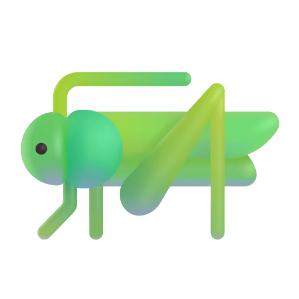

Calendario de juego
| PARTIDO | HORA | LUGAR | ||
|---|---|---|---|---|
 |
Tigres vs Saltamontes FC |  |
4:00 PM | Armando Maestre Pavajeau, Valledupar, Colombia |
 |
Atlético FC vs Saltamontes FC | 2:00 PM | Metropolitano de Techo, Bogotá | |
 |
Unión Magdalena vs Saltamontes FC | 3:00 PM | Polideportivo Sur, Envigado, Colombia | |
 |
Bogotá FC vs Saltamontes FC | 8:20 PM | Centenario de Armenia, Buenos Aires, Colombia |